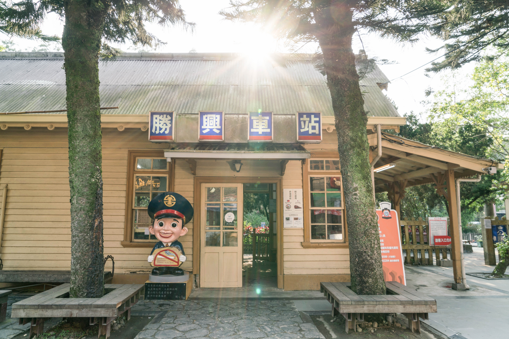
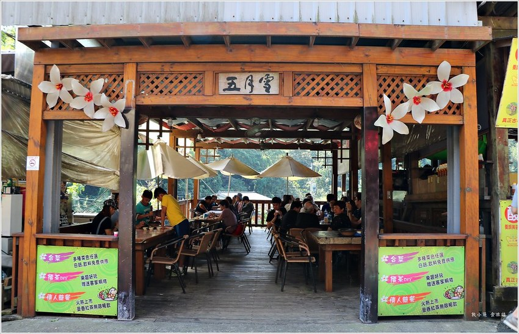
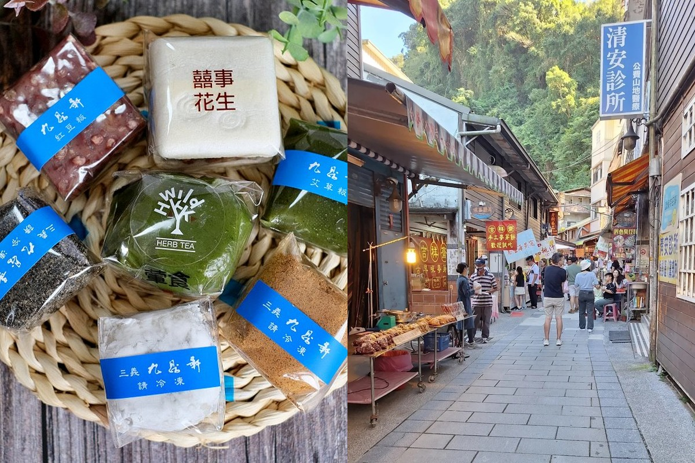
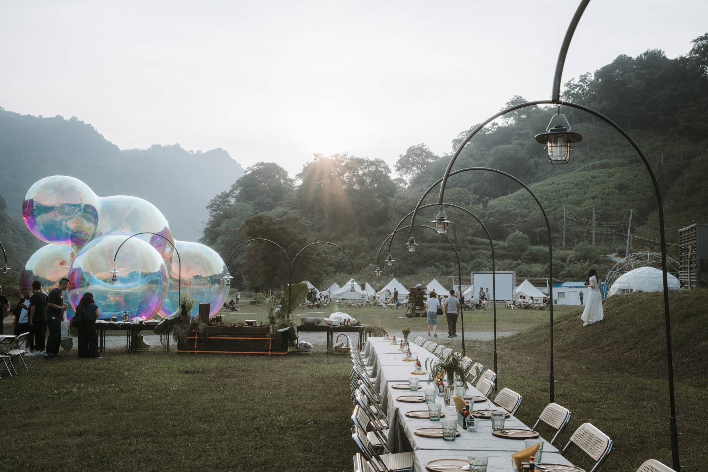
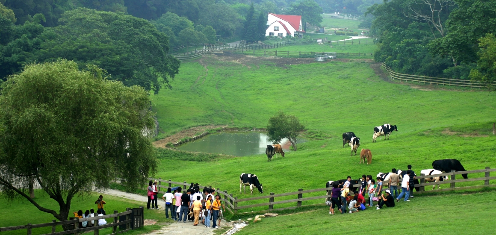
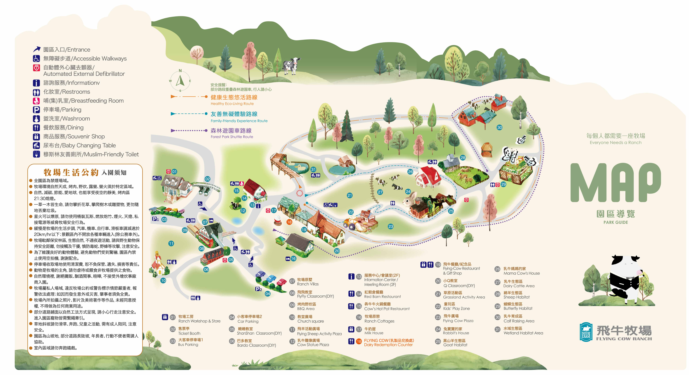
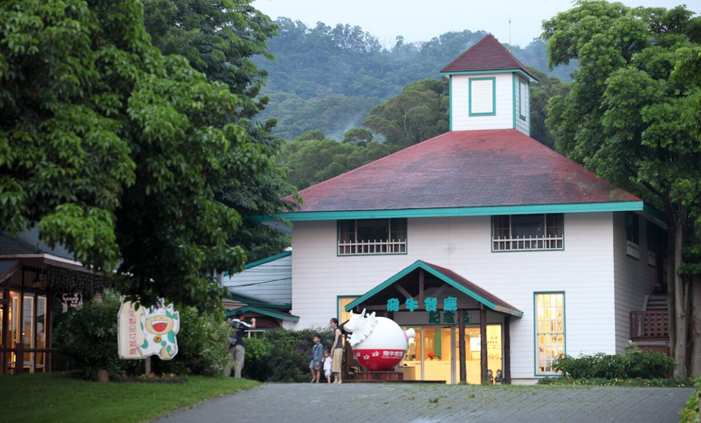
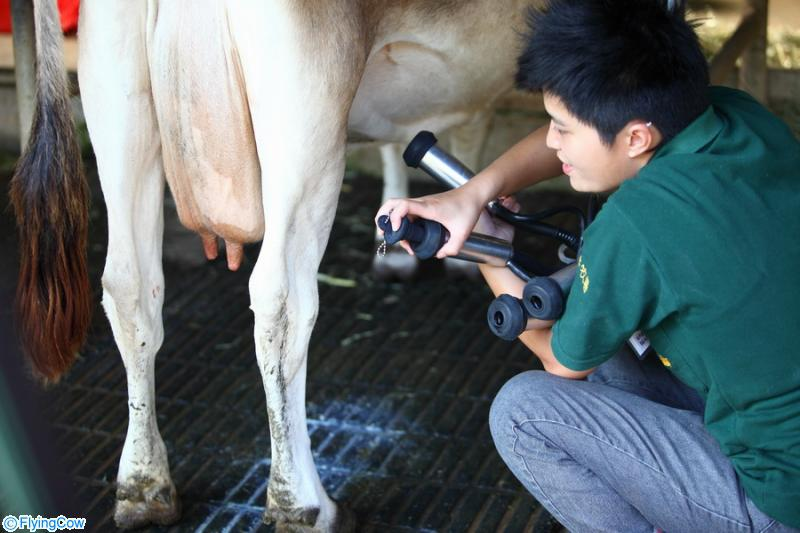

旅程總覽
這趟安排以「上午有景、下午不趕、入住後好好放鬆」為核心。第一天把重點集中在三義與泰安之間，第二天則用飛牛牧場收尾，讓大人小孩都保有玩樂和休息的空間。
舊山線懷舊鐵道
從勝興車站展開，感受百年山線留下的慢節奏與山城氛圍。
山林帳篷夜宿
翩翩泰安一泊二食，把旅程的重心留給入住後的放鬆時光。
客家人文與午餐
三義在地餐館，用一頓有味道的午餐為第一天的上午收尾。
草地牧場作結尾
飛牛牧場的大片草地，是讓孩子放電、大人緩緩回神的好地方。
第一天｜鐵道、客家午餐與入住翩翩
先用勝興車站打開旅程氛圍，中午吃一頓完整的客家菜，下午只保留一個彈性景點，最後帶著好狀態抵達翩翩泰安，讓旅程在山林裡慢下來。

已預訂 12:30


10:00-10:30
抵達勝興車站
集合、停車、讓全團進入旅行節奏。
10:30-12:00
拍照與走走看看
給小朋友活動空間，也讓大人有時間感受舊山線氛圍。
12:30-13:30
五月雪午餐
訂位已確認，12:30 準時入座，好好享用客家合菜。
13:30-14:10
九鼎軒或豆腐街
視當天路況、用餐結束時間與孩子狀況決定是否停留。
14:10-15:00
前往翩翩泰安
保留車程與停車緩衝，讓入住不慌張。
15:00-20:00+
入住、活動與晚餐
真正的放鬆從這裡開始，節奏應以舒適為優先。
九鼎軒或豆腐街如何選擇？
如果午餐準時結束、路況順、大家精神好：
可考慮再增加 九鼎軒或豆腐街。
可考慮再增加 九鼎軒或豆腐街。
如果想靠近泰安方向、只想輕鬆多一站：
可考慮 豆腐街。
可考慮 豆腐街。
如果小朋友累了、時間餘裕不夠：
兩站都略過，直接前往翩翩泰安。
兩站都略過，直接前往翩翩泰安。
住宿提醒｜入住前先知道，現場更從容
翩翩泰安不是單純睡一晚的住宿點，而是第一天後半段的核心體驗。把房型、備品與晚餐方式先看懂，現場就不容易手忙腳亂。
入住節奏
官方資訊以 15:00 可入園、15:30 正式進房為主。這代表第一天下午不要把所有空檔都塞滿，真正舒服的行程，是能在入住前還保有餘裕。
房型確認
本次訂的是旅行帳，含獨立衛浴，不需與其他房客共用盥洗空間。帶 5 位小朋友同行，獨立衛浴讓半夜照顧與洗澡都方便許多，不用特別擔心。
餐食型態
住宿內容為一泊二食，包含晚餐與早餐，另外還有迎賓午茶和宵夜小點。因為晚餐屬無菜單料理，如果有人不吃牛、海鮮過敏或有孩子飲食需求，建議提前備註。
行前小提醒
住宿處不主動提供一次性備品，記得自備牙膏牙刷等個人盥洗用品。園區晚上 22:00 後需注意音量。建議帶保暖外套、防滑拖鞋與好走的鞋。
第二天｜飛牛牧場，把旅程收在大片草地裡
第二天的關鍵是輕鬆，不要把早餐、收行李、退房和移動壓太緊。讓大家在翩翩泰安慢慢醒來，再帶著好狀態去飛牛牧場，會比趕著出門更值得。

門票資訊
全票
280
學童票國小
220
幼童票3 歲至幼稚園
160
小客車停車費
50
3 歲以下
免費
以上憑門票可免費兌換乳製品乙杯。
線上購票 · 查看即時票價
KKday
優惠套組
飛牛牧場門票．套票
飛牛牧場門票・鮮乳冰淇淋 × 1 份・迎賓乳製品 × 1 杯
查看即時票價
Klook
優惠套組
飛牛牧場門票．套票
一日遊全票・鮮乳冰淇淋 × 1・新鮮乳製品 × 1 杯
查看即時票價
上方門票售價為官網公告價格，實際售價及優惠以各平台即時頁面為準
園區導覽地圖

點擊開啟大圖飛牛餐廳

已預訂 12:40 場次
飛牛餐廳
位於園區 19 號的飛牛餐廳是牧場內主要合菜餐廳，提供平假日午晚餐服務。本次已預訂 12:40 場次，七菜一鍋、10 人份一桌，讓大家在玩了半天之後好好入座補充能量。
擠牛奶體驗

第三場 · 14:15
乳牛媽媽的家
帶孩子親手體驗擠牛奶，是這天最值得留時間的一個環節。午餐後別拖太久，預留一點緩衝走到 26 號館，讓小朋友有好整以暇地參與。
每日場次時間
場次一
07:00
場次二
11:00
場次三
14:15
目標場次
場次四
17:00
08:00-09:00
早餐與整理行李
讓早晨保持寬鬆，小朋友起床也更有彈性。
09:00-09:20
準備退房
確認物品、集中行李、安排上車順序。
09:20-10:20
前往飛牛牧場
保留車程和停車時間，比 9:30 抵達更實際。
10:20-12:30
牧場自由活動
把時間留給互動、拍照和放風，不必追求太滿的節目表。
12:30-13:30
飛牛餐廳午餐
園區 19 號飛牛餐廳，已預訂 12:40 場次，七菜一鍋合菜。午餐別拖太久，14:15 的擠牛奶場次要趕上。
14:15
擠牛奶體驗
乳牛媽媽的家，帶小朋友去體驗，是這天最值得留時間的一個環節。
15:00
返程
各自返程，每個家庭依實際路況與需求安排。
攜帶清單｜滑到這裡，就能開始準備行李
這趟有山區氣溫變化，也有孩子同行，所以行李的重點不只在衣服，還包括盥洗、證件、藥品和路上安撫物。
全體共用
小朋友另外準備
苗栗，值得你慢慢來。
舊山線的鐵道、客家的氣味、山林裡的夜晚、還有一大片牧場的草地。這趟週末沒有要走遍苗栗，只是帶著八個大人、五個孩子，在對的地方多停一會兒。